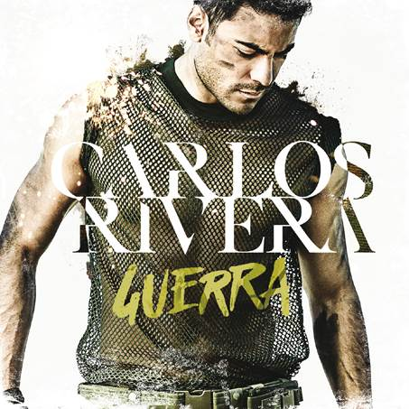
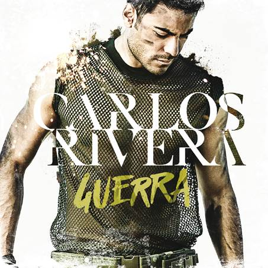

Biografía
Originario de Huamantla, Tlaxcala, nació el 15 de marzo de 1986. La crítica especializada nacional y extranjera ha reconocido sus cualidades vocales e histriónicas, así como su fuerza interpretativa. Esto, aunado a un trabajo y entrega constantes en cada escenario en el que se para, produce una conexión con el público, empatía y admiración. Por todo ello, Carlos Rivera se ha dado a conocer con paso firme en diversos países y, hoy por hoy, es una de las figuras de México con mayor proyección y futuro a nivel internacional.
Desde muy niño, Carlos siempre disfrutó enormemente cantar; no perdía la oportunidad de hacerlo en cualquier espacio que encontraba. Igual lo hacía en fiestas como en los diversos concursos del colegio o de su estado, Tlaxcala, y su ciudad natal, Huamantla, los cuales siempre ganaba. En varias ocasiones ganó el concurso estatal de canto y pronto se convirtió en toda una personalidad en la región.
En 2004, tras pasar infinidad de pruebas, audiciones y desafíos, logró entrar al reality de Televisión Azteca “La Academia”. Después de meses de competencia se ganó el respeto de los jueces y con más del 80% de los votos se convirtió en el máximo ganador de la tercera generación.
Después de conseguir el 1er. lugar en este programa, Carlos se convirtió en una figura respetada y conocida en millones de hogares mexicanos y en ese mismo año, el cabildo de su ciudad lo nombró por unanimidad “Hijo Predilecto de Huamantla”.
 
